Inhalt Index DeskTop Bronstein

 Algebra und Diskrete Mathematik Fuzzy-Logik Wissensbasierte Fuzzy-Systeme Wissensbasiertes Interpolationssystem
Algebra und Diskrete Mathematik Fuzzy-Logik Wissensbasierte Fuzzy-Systeme Wissensbasiertes Interpolationssystem


Bei Fuzzy-Systemen mit nur einer Eingabe 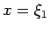 werden oft Fuzzy-Mengen verwendet, die durch Dreieckfunktionen dargestellt, die sich auf der Höhe 0,5 schneiden werden. Solche Fuzzy-Mengen genügen drei Bedigungen:
| 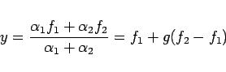 | (5.423) |
mit von x abhängigen 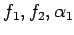 und 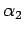 sowie 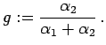
Der eigentliche Verlauf der Interpolationskurve zwischen x1 und x2 wird von der Funktion g bestimmt. Diese wird daher als Kurvenverlauf bezeichnet. Sie hängt nur von den Erfüllungsgraden  und ab, die sich als Werte der Zugehörigkeitsfunktionen 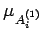 und 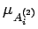 an der Stelle x ergeben, d.h., es ist 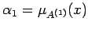 und 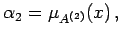 oder kurz 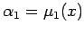 und 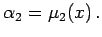 Der Kurvenverlauf hängt nur vom Verhältnis 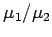 der Zugehörigkeitsfunktionen ab.
und ab, die sich als Werte der Zugehörigkeitsfunktionen 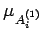 und 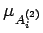 an der Stelle x ergeben, d.h., es ist 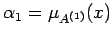 und 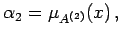 oder kurz 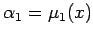 und 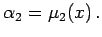 Der Kurvenverlauf hängt nur vom Verhältnis 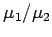 der Zugehörigkeitsfunktionen ab.
| 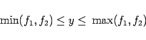 | (5.424) |
bzw. für den allgemeinen Fall
| 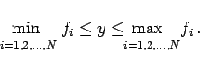 | (5.425) |
Für konstante Konklusionen bewirken die Terme f1 und f2 lediglich eine Verschiebung und Streckung des Kurvenverlaufes 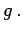 Sind die Konklusionen von den Eingangsvariablen abhängig, dann wird der Kurvenverlauf in verschiedenen Abschnitten unterschiedlich verzerrt. Dadurch kann sich eine andere Ausgangsfunktion ergeben.